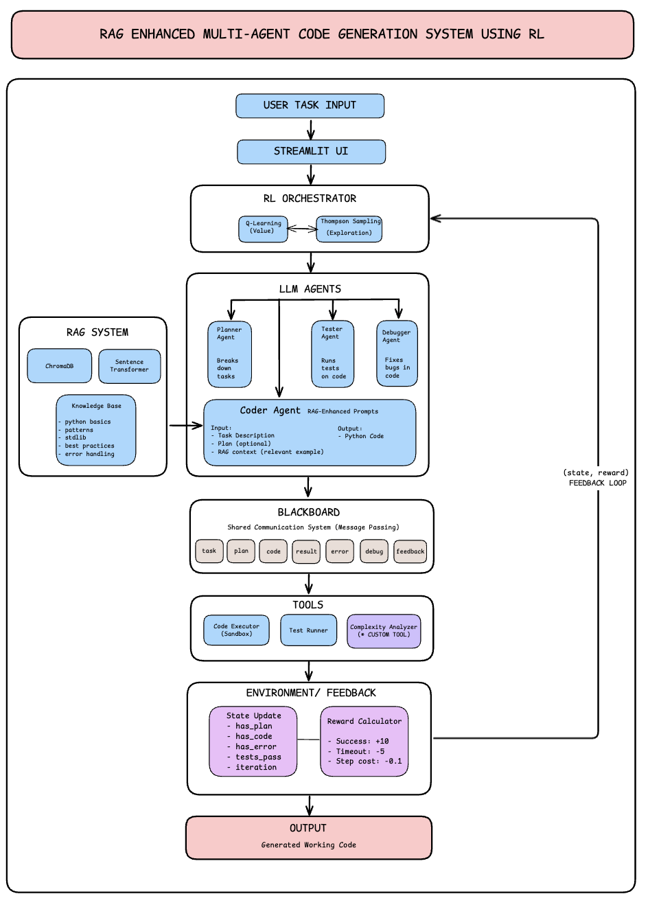

The Idea
This project is a small scale demonstration of how we can coordinate multiple LLM agents using Reinforcement Learning to learn optimal orchestration strategies. Rather than building a production code generator, the goal here is to explore an interesting question: can an RL agent learn when to call which specialized agent for maximum efficiency?
The system combines Reinforcement Learning (Q-Learning + Thompson Sampling) with Retrieval Augmented Generation (RAG) to orchestrate four specialized agents: Planner, Coder, Tester, and Debugger. The key insight is not about generating better code than existing LLMs, but about reducing unnecessary API calls while maintaining the same results.
What This Project Demonstrates
- RL for Agent Orchestration: Q-Learning + Thompson Sampling learns which agent to call based on current state
- Efficiency Gains: 56% fewer API calls compared to fixed pipeline, same 100% success rate
- RAG Integration: ChromaDB vector store with Python knowledge base enhances code generation
- Multi-Agent Architecture: Four specialized agents with blackboard communication pattern
- Interactive Demo: Streamlit UI for visualizing agent activity and comparing approaches
The Four Specialized Agents
The system uses four LLM agents, each specialized for a specific phase of code generation:
Planner
Decomposes complex tasks into actionable steps and identifies requirements
Coder
Generates code using RAG retrieved context for best practices and patterns
Tester
Analyzes code for errors, edge cases, and potential improvements
Debugger
Fixes identified issues and optimizes code based on test feedback
System Architecture
The complete pipeline from user input to generated code:

The RL Formulation
The orchestration problem is modeled as a Markov Decision Process (MDP), allowing the system to learn optimal agent coordination through experience:
State Space (64 states)
has_plan- Whether a plan existshas_code- Whether code has been generatedhas_error- Whether errors were detectedtests_pass- Whether tests are passingiteration_bucket- Current iteration (0-3)
Action Space (4 actions)
- Action 0: Invoke Planner
- Action 1: Invoke Coder
- Action 2: Invoke Tester
- Action 3: Invoke Debugger
Reward Function Design
The reward function encourages task completion while penalizing inefficiency:
| Event | Reward | Rationale |
|---|---|---|
| Task Success | +10.0 | Primary goal: complete the coding task |
| Progress (code generated) | +0.3 | Encourage forward progress |
| Redundant action | -0.2 | Discourage unnecessary agent calls |
| Step cost | -0.1 | Prefer shorter trajectories |
Thompson Sampling for Exploration
Instead of simple epsilon-greedy exploration, I combined Q-Learning with Thompson Sampling:
- Maintains Beta distributions over action quality for each state
- Samples from distributions to balance exploration vs exploitation
- Updates distributions based on observed rewards
- Results in more efficient policy discovery compared to epsilon-greedy
"Thompson Sampling naturally balances exploration and exploitation by sampling from posterior distributions. Actions with uncertain values get explored more, while proven good actions get exploited."
RAG Integration
The RAG system significantly improves code quality by providing relevant context to the Coder agent:
Key Results
After training (~100k simulated episodes), the RL agent learns an efficient policy:
| Metric | Fixed Pipeline | Learned Policy |
|---|---|---|
| Success Rate | 100% | 100% |
| Average Steps | 4 steps | 2 steps |
| Strategy | All 4 agents sequentially | Coder → Tester (adaptive) |
| Redundant Operations | Common | Eliminated |
Technical Implementation Highlights
Simulated Environment for Fast Training
Training an RL agent with actual LLM calls would be prohibitively slow and expensive. I created a simulated environment that models agent behavior probabilistically:
class SimulatedEnvironment:
def step(self, action):
# Model probabilistic outcomes based on current state
if action == CODER and not self.state['has_code']:
# 95% chance Coder produces valid code
success = random.random() < 0.95
self.state['has_code'] = success
self.state['has_error'] = random.random() < 0.1
# Calculate reward and check termination
reward = self._calculate_reward(action)
done = self._is_terminal()
return self.state, reward, done
This enabled ~100k training episodes per second without actual LLM calls, allowing rapid experimentation with reward functions and hyperparameters.
Custom Code Complexity Analyzer
Built a tool that analyzes generated code for:
- Cyclomatic Complexity: Number of independent paths through the code
- Lines of Code: Total and effective (non-blank, non-comment)
- Cognitive Complexity: How difficult the code is to understand
These metrics feed into the UI dashboard and can be used for reward shaping in future iterations.
Blackboard Communication Pattern
Agents communicate through a shared "blackboard" rather than direct message passing:
class Blackboard:
def __init__(self):
self.plan = None
self.code = None
self.test_results = None
self.errors = []
self.history = []
def post(self, agent_name, content_type, content):
self.history.append({
'agent': agent_name,
'type': content_type,
'content': content,
'timestamp': time.time()
})
This decouples agents and makes it easy to add new agents or modify existing ones without changing the orchestration logic.
Streamlit UI Features
The interactive UI provides full visibility into the system's operation:
Technologies & Skills Demonstrated
Lessons Learned
- State Design Matters: The right state representation is crucial for RL to learn meaningful policies. Too few features = can't distinguish situations. Too many = slow learning.
- Simulation Enables Iteration: Fast simulation allowed rapid experimentation with reward functions and hyperparameters. I could test 50 different configurations in a day.
- RAG Complements Agents: Even capable LLMs produce better code when given relevant examples. RAG is not just for knowledge retrieval, it also improves output quality.
- Simple Policies Win: The learned policy was surprisingly simple: skip unnecessary steps. Complex reward engineering often leads to simple emergent behaviors.
- Visualization is Essential: The Streamlit UI was not just for demo. It was crucial for debugging and understanding system behavior during development.
Resources & References
- Professor Nik Brown at Northeastern University for the Prompt Engineering & AI course
- DeepLearning.AI: Building & Evaluating Advanced RAG
- Lilian Weng: LLM Powered Autonomous Agents
- Thompson Sampling Tutorial
- ChromaDB Documentation for vector store best practices
What's Next
Future improvements could include:
- Richer State Representations: Use embeddings of code/errors instead of binary features
- Hierarchical RL: High-level policy selects sub-goals, low-level policies execute
- Online Learning: Adapt the policy based on real user feedback
- Code Execution Sandbox: Actually run generated code for true test validation
- Multi-Language Support: Extend RAG knowledge base beyond Python
Try It Yourself
The project is fully open source and deployed:
- Complete source code with documentation
- Pre-trained Q-tables for immediate use
- Knowledge base for RAG (easily extensible)
- Streamlit UI deployed on cloud
Final Thoughts
This project demonstrates that combining RL orchestration with RAG can create more intelligent and efficient AI systems. The key insight is not just that multiple agents are better than one, but that learning when to use each agent matters as much as having specialized agents.
The principles extend beyond code generation to any multi-agent coordination problem: customer service pipelines, content creation workflows, or research assistants. Whenever you have specialized components that could work together, RL can learn the optimal coordination strategy.
Building this system reinforced my belief that the future of AI is not just bigger models, but smarter systems that combine multiple capabilities intelligently. The intersection of RL, RAG, and multi agent architectures is where I see some of the most exciting opportunities in AI engineering.